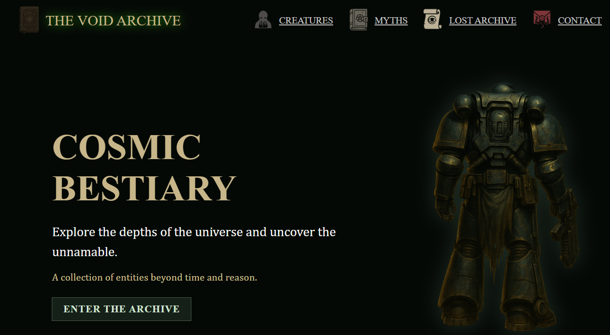
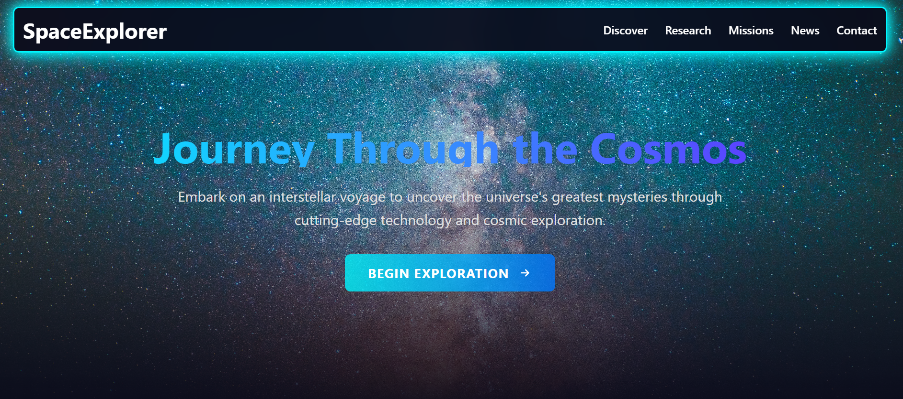
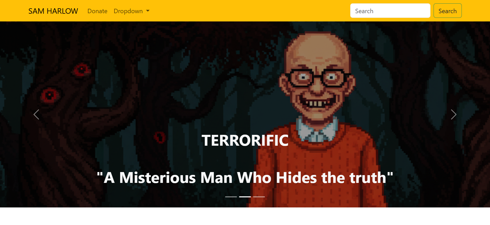
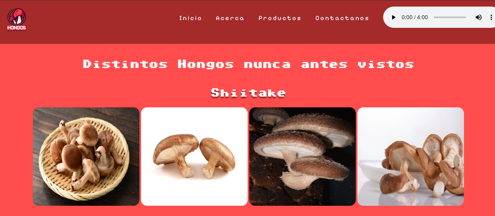

The Void Archives
"The Void Archive" is a cosmic bestiary-style web project inspired by dark fantasy, sci-fi, and horror universes such as Lovecraft, Bloodborne, Warhammer 40k, Carcosa, Dead Space, and Fear and Hunger. It features an interactive catalog of forbidden creatures, lost myths, and terrifying realms. Built with HTML, CSS and JavaScript, this site combines immersive storytelling with a moody, thematic design, aiming to deliver an eerie and atmospheric user experience.
HTML
CSS
JavaScript
See Project

SpaceExplorer
SpaceExplorer is a responsive and visually immersive website designed to simulate a futuristic space agency. Built entirely with Tailwind CSS, it guides users through the mysteries of the universe — from black holes and planetary systems to dark matter and interstellar missions.
With a clean, utility-first layout, the site features interactive sections, space facts, and a mission roadmap that outlines humanity’s next steps in cosmic exploration. It’s designed to educate, inspire, and showcase how Tailwind can be used to create modern, structured, and elegant web experiences.
Tailwind
See Project

Sam Harlow
This is a character-focused landing page for Sam Harlow, a protagonist from a fictional 2D horror game set in the Appalachian mountains. The page showcases Sam’s background, survival tools, and lore elements tied to the game world — blending dark folklore, mystery, and exploration.🛠️ Built entirely with Bootstrap, the page features responsive design, interactive UI elements, and clean component-based sections. It's designed to simulate an in-game dossier or teaser, offering users a glimpse into the horror-filled universe.
Bootstrap
See Project

Hongos misteriosos
"Hongos Misteriosos" is an informative website that explores various edible and poisonous mushrooms. The project combines educational content with visual design, highlighting species like shiitake, porcini, truffle, and champignon, as well as dangerous ones like the death cap. Built using HTML and CSS, the site serves as an introductory exercise in web layout, semantic structuring, and responsive design.
HTML
CSS
See project